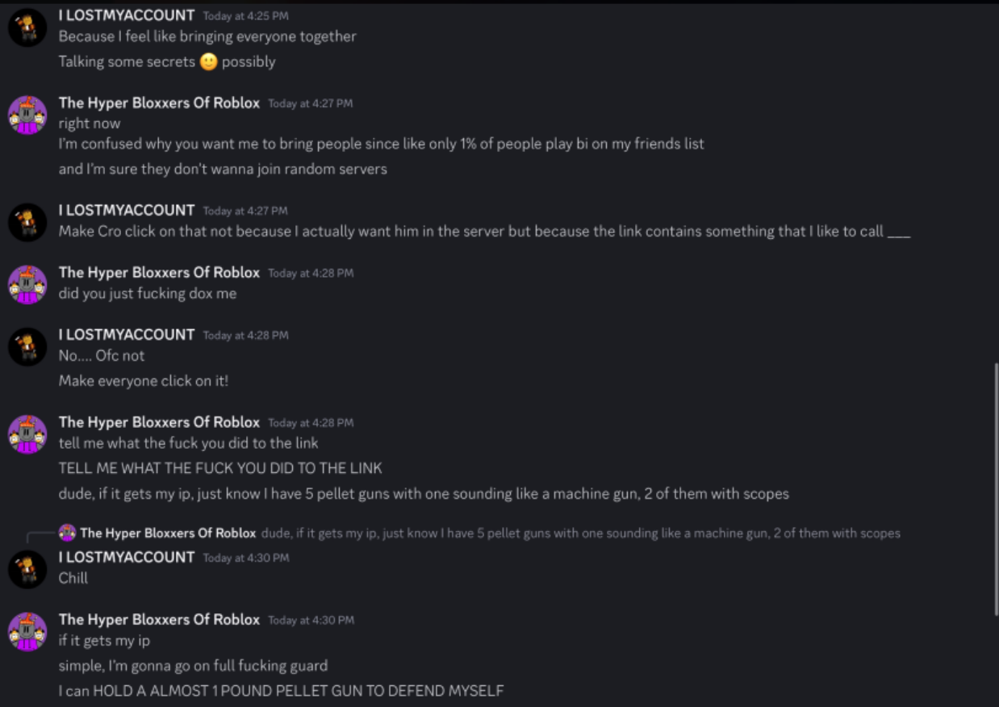
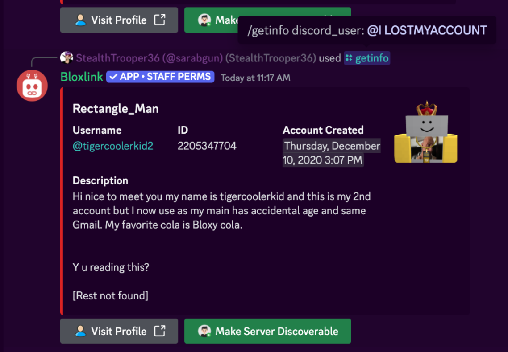
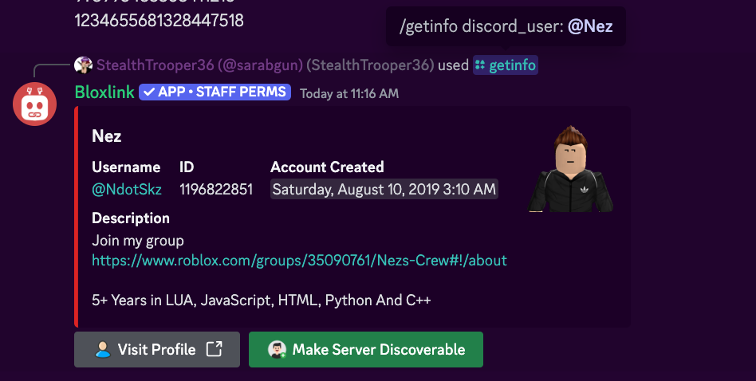
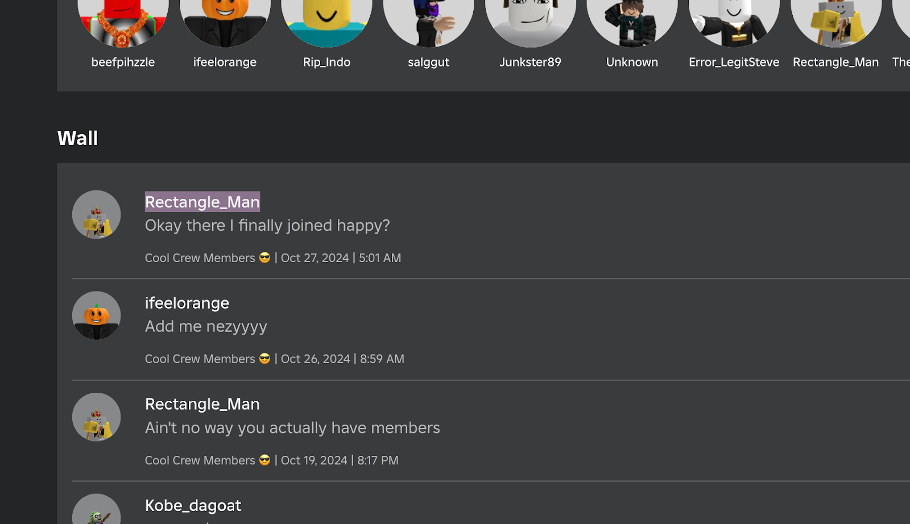

Build Island player doxxed; moderators start a banwave
Published on: Tuesday, 29th October 2024
Published by:  Eunoia Studios (StealthTrooper36)
Eunoia Studios (StealthTrooper36)
On the 28 of October, 2024, a user by the name of “ILOSTMYACCOUNT” ip logged another user who went by the name of ‘hyperbloxxer’. We will be referring to ‘ILOSTMYACCOUNT’ as the doxxer.
The doxxer sent Hyperbloxxer a link to what appears to be a Roblox game, however they had used Hyperlinks to mask the URL and it was actually an ip grabber. The doxxer then chose to threaten to come to the user’s home, concerning him to the point where he armed himself with a gun. The doxxer also is trying to target Cromerrr, who also alerted moderators on the matter.
We found out the main account of the doxxer, which is tigercoolerkid2 or known as “Rectangle_Man”.
Tigercoolerkid2 owned a server which had the following people in it:
- Nez
- B1nmaster
- heywhateverperson
It's common knowledge that Nez is NdotSkz, however we will still prove it.
Nez also owns a group called Nez’s crew.
And guess who’s in Nez’s crew? Rectangle_Man (which is tigercoolkid’s display name).
We have questioned multiple people including b1nmaster and heywhateverperson, they all state they were invited by Rectangle_Man and didn’t do anything, it’s likely that the doxxer acted alone. However, they were still friends with Rectangle_Man, which is why we used the fact how tigercoolerkid2 was in Ndot's group as evidence.
Everyone in Rectangle_Man's Discord was immediately banned as a result of a banwave for association.
Back to Home.